|
|
On the board 'AmateurPyro.com' there was described by a poster, PDFBDQ, a way to attach MMO to a piece of Titanium so that the MMO would
be completely submerged and therefor no MMO area being used as a current runner and wasting good MMO real estate! This connection was a Ti rivet + a flat piece
of Titanium and worked well, even though the
connection was rather sloppy, so long as the connection was underneath
the surface of the liquid in the chlorate cell. Having seen this it was decided to try
a similar connection between a piece of Platinum bullion and a flat piece of Titanium
as a current runner. This allows all of the Platinum to be submerged and therefor almost all
of its surface area to be utilized for chlorate or/and perchlorate production. It would be unrealistic to use a small Pt bullion bar in a cell and expect some of the Pt to be used as a current runner from the anode connection (whatever metal that may be) to the surface of the cell liquid. Most of the bar would be used up and still the troublesome connection between the Pt and the current runner would be exposed to spray/gasses etc. You would need a piece of Pt a few centimeter$ lon£. A similar electrode/idea is also called the "bi-electrode" as described in Platinum Metals Review 1960, 4 (1) Ti-Pt and Ti-Pt Bi-Electrodes. A one gram PAMP Suisse bar of Platinum was obtained. It measures 14.7 by 8.9 by 0.36mm, giving a surface area of approx. 2.6cm squared. At one Amp this give a current density on the anode of 385 mA per square cm. which is a reasonable CD. I have seen Platinum run at higher CD's. This gives around 44 grams of Na perchlorate per day (from chlorate) at around 80% CE. A constant current supply was used for all cell runs. The image shows the anode together with a cathode. 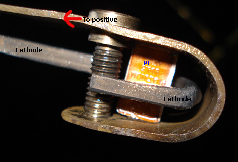
The Platinum bar is held in a bent piece of flat Ti by a Ti bolt. The bolt screws into a hole in the Ti which was threaded using a simple threader.
The electrode was put to the test in a 'jam jar' cell containing dissolved sodium perchlorate (no chlorate or chloride) at one Amper for 15 days.
Cell temperature was around 30C and cell Voltage around 6 Volts. There were no noticeable problems or weight loss from the Platinum.
New cell liquid which contained 424 grams sodium chlorate per litre of solution was
added to the cell. No chloride. Cell volume was around 360ml giving a total weight
of sodium chlorate of around 153 grams. Current efficiency was around 75% when chlorate concentration was sensibly high. Five days later chlorate concentration
was measured at 0.5 grams per liter of solution. Platinum seems to be very good
at rapidly reducing the chlorate concentration to very low levels. No noticeable
weight loss on Pt bar. Another cell was started up with 500g/l Na chlorate and run for about 5.5 days. Chlorate at the end of run was measured at 0.08 grams per litre. There was a smell of ozone from the cell at the end of run. No weight loss for the Platinum. The cell pH was not measured.
| |
Potassium Perchlorate cellAnother cell run was performed this time using potassium chlorate as starting material at 168 grams per litre. No chloride present. The cell was kept warm at around 60C using a hot plate as potassium chlorate is not very soluble when temperature is low. CE was lower than Na cells at around 50 to 60%. The formed perchlorate was inclined to accumulate on the anode/cathode electrode and had to be brushed off two or three times.
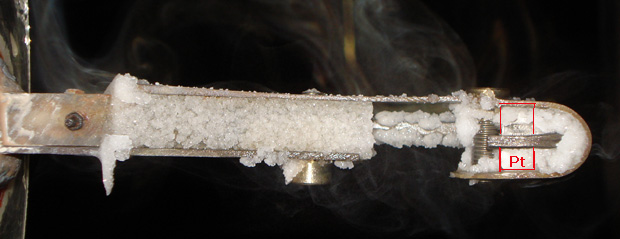
The cell was run to a point where there would be
very little chlorate left in the cell liquor. Serious corrosion of the Titanium
current runner going to the Platinum bar occured just below the water line and
this caused a deposit of grey Ti compound in the cell as the end of run approached.
Something to be watched if running K perchlorate cells but this problem did not occur on the next cell run.
The actual cause of this corrosion is unknown. See picture. BTW the Ti in question was not 'heat damaged' as in the strontium cell below.
| |
Lithium CellAnother cell was started using Lithium chloride as the starting material. The chloride was obtained from ceramic grade carbonate + HCl acid. 96.5 grams of Li chloride was dissolved into the cell giving around 261g/l in a 360cc volume. Current was one Amp using a constant current supply. A trace of perchlorate showed up in the cell after some hours but only a trace. Twenty five days later perchlorate stared to form as the chloride level went down to around 25 grams per litre. The chlorate run give around 50% CE. There was no attempt made to control pH. Chlorate making with a small anode like this is very slow. Seven days later the cell was shut down. Chlorate level was measured at around 0.03 grams per litre and chloride level was measured at less than 0.36 grams per litre. The cell contents was heated to around 150C for 6 hours to obtain the anhydrous perchlorate salt which (I believe) in not possible to get without vacuum, so I probably had a mixture of the trihydrate and the anhydrous. Lithium perchlorate is the only perchlorate with a known definite melting point. It does not decompose at its melting point.Total weight of the perchlorate salt when it went solid was 217 grams. There was no weight loss on the Pt, it still weighed 0.98 grams.
| |
It was decided to attempt to make the anode larger by hammerng the Pt bar and making it thinner. Pt leaf is made professional by placing the Pt between layers of velum
(light leather) and hammering. Two pieces of ordinary leather were obtained and an approx.
250g hammer with one side flat was obtained and hammering began on a solid steel
slab with the Pt between the two pieces of leather. The Pt flattened easily enough, its area was increased
to twice what is was.
The area of the Pt was now 2.62cm squared per side. The anode/cathode assembley was simplified
with the platinum now being clamped between two flat pieces of Ti not unlike a pair of pincers
with a very broad nose. The Ti bolt (grade one) together with a Ti washer, the Ti with the threaded hole and the Ti current runner was used to do the clamping.
Current was run at three Amps, which is a cd
of 575 mA per square cm, quite high. The same cathode was used as before. This 3 Amp anode will give around 130 grams sodium perchlorate (from chlorate) per day
at 80% CE. |
|
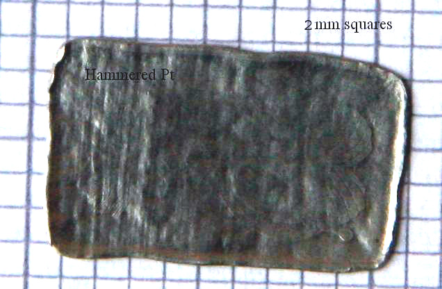
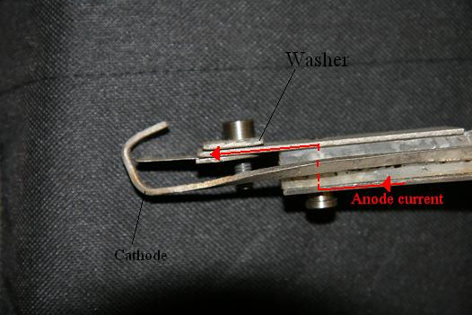 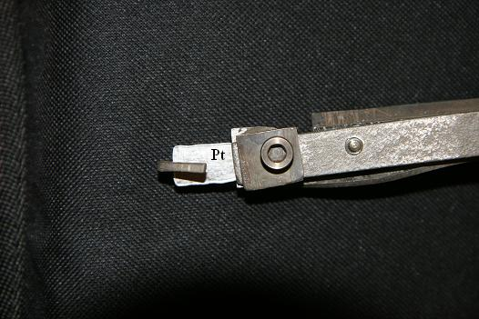
|
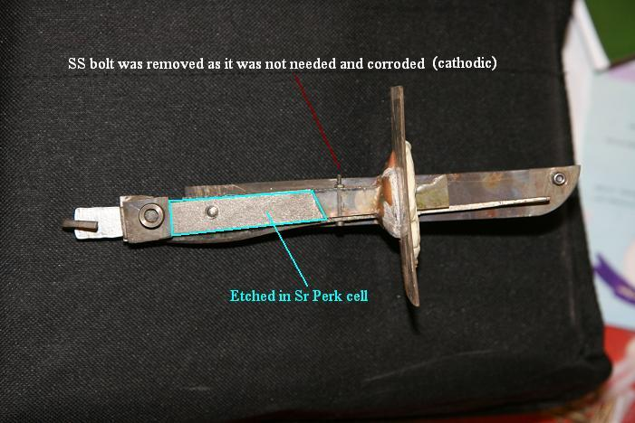
The cell was let settle for three days to allow cloudyness to deposit on cell bottom. Clear liquid was decanted off and the rest filtered. Liquid was dried off by placing the cell contents in a flat glass tray in an oven and heating to 170C for about 24 hours. It was very difficult to get rid of the water. A total of 474 grams (1.65 moles) of Sr perchlorate was obtained, there should be 535g (1.87 moles)). Some grams product would have been lost when doing titrations etc. The amount of product does not correspond to the amount of starting Sr carbonate. There is approx. 60 grams missing? I have no idea where it could have gone or what error was made. Total Amp-hours into cell was 1049Ah which is 39.14 moles of electrons. Having 1.65 moles of product gives 1.65 x 2 x 8 = 14.952 moles of electrons needed, giving a current efficiency of 56.6 percent.
A larger cathode could be used to stop the low solubiltiy of strontium hydroxide causing cell voltage problems.
To end Ti corrosion problems a more 'valve' valve metal could be used like Niobium. This will cost more but if the
cell is being stirred the anode only needs to go below the surface of the electrolyte and therefor you would need very little valve metal.
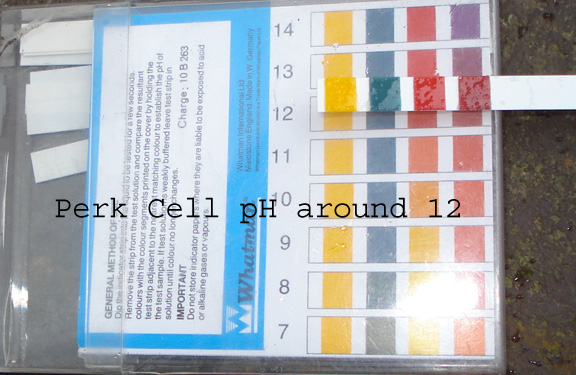
The jam jar cell was started up again using a solution containing 95g/l sodium chloride and 496g/l sodium chlorate and around 600ml. This is not a sensible starting solution
for Platinum anode perchlorate cells as chloride causes anode erosion. This cell could be called a chlorate cell for the first day or two I suppose.
Stirring was not used as the anode was close to the jar bottom and bubbles kept all of the solution moving.
No pH control was attempted. The cell was run at 3 Amps for 3 days and chlorate level was above 15g/l.
The pH of the cell was measured at around day 4 and found to be high at around 9.
Cell contents were titrated for chlorate level on the seventh day of operation and found to be 5.14g/l Twenty four
hours later the chlorate concentration was below 1g/l. The pH at this stage was measure with a high quality probe at a value of 11.5
but you can measure the pH OK using pH paper (only when cell has high pH, see cell No. 2 below)
as there is no bleaching effect as you have in a chlorate cell due to the presence of hypochlorite (bleach!).
Cell contents was evaporated and dried at around 150C for some hours. Total product (presume anhydrous) was 446grams perchlorate. Total Amp-hours into cell
was 576Ah AFAICR.
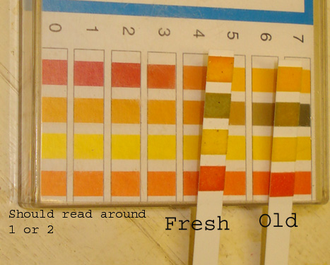
The pH of the cell was measure at the start and was around 9.8. 2cc acid was added and cell went to pH 7. A few hours later the cell was at pH 9 and it took 19cc of acid
to take the pH to 6.8. The next day 7cc of acid was added to keep cell around a pH of 6.8. Next day 7cc acid added. Next day 4cc added very early in the day with no more acid
additions needed to keep pH around 6.8. pH drifted down slightly later in the day and chlorate concentration was measured at 400g/l. Later in the day chlorate concentration was
at 349g/l. The cell had now ran for 78 hours, 234 Amper-hours had passed in.
When the chlorate concentration was betweeen 349 and 184g/l the CE was 86% with pH around 6.8.
When chlorate concentration was between 184 and 8.8g/l the CE was close to 100% with pH around 4.7. (suspiciously high CE!)
Twelve hours later the chlorate concentration was 0.53g/l with pH now at 1.7. It appears that you cannot measure the pH of this cell with pH paper (Whatman Type CF).
It gives a false reading unlike the cell above (high pH) where it worked OK.
This cell had run for 5.5 days to take chlorate concentration to a low level. The last cell ran for six days to take chlorate concentration to a low level.
There was no sign of titanium erosion in the last three cells. All liquor at the end of each run was clear.
The Platinium bar now weighed in at 0.91 grams, down from 0.95 three cells/batches ago, using the same 2 decimal points scale as above.
That's approx. three batches of 440 grams sodium perchlorate made from a
'not-to-be-recommended' starting solution taken all the way to very low chlorate levels. This equated to 30.3 grams Pt per ton of Na Perk. produced. Ferocious erosion
compared to commercial production cells. The starting solution contained chloride. Making perchlorate with chloride
in the cell is erosive to platinum according to various sources. Also keeping chlorate concentration high in the cell will give greater CE and probably reduce Pt
wear. Using the Pt to reduce the chlorate concentration to very low levels (chlorate scavenging) as opposed to letting the Na Perk. crystallize out of solution
(my adding chlorate to cell as the cell progresses) saves lots of work and is easy to do.
|
Since Titanium is not exactly OTC it was decided to see if Tungsten could be substituted for the Titanium as W is a 'valve' metal similar to Ti, Nb etc. 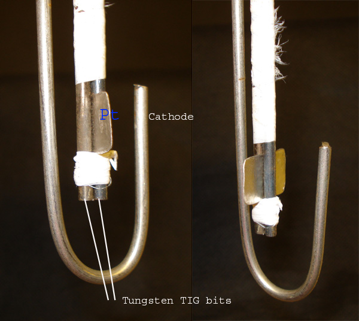 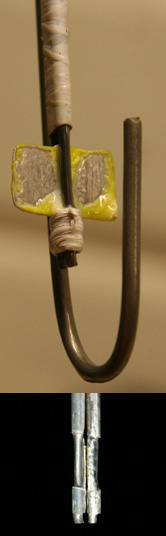 Two TIG welding electrodes of approx. 3.5mm dia. and 150mm long were to hand, the exact type of electrode was unknown (if they contained Thorium, Cerium etc). Thinner electrodes would probably do just as well. The two rods were placed side by side and bound together using plumbers teflon tape. The Pt plate (hammered bar) was slid between the rods and the bottom ends of the rods were then squeezed together tightly with a pair of small vice-grips (locking plyers) and some more teflon tape wound around the bottom ends of the rods and tied securely. A 625 Inconel welding rod was used as the cathode as it was to hand. An ordinary piece of stainless steel would do just as well.
The anode was placed into a cell (similar to the last two cells) of 770ml containing a solution of 95g/l sodium chloride and 496g/l sodium chlorate. Current
was three amps. No pH control was attempted. Voltage accross the cell was 6.6V.
After 62 hours of operation the electrode was examined and it was noticed that the tungsten was being etched away. The rods are much thinner as shown in the small picture. There was a yellow
compound being deposited on the platinum (WO3, probably). The pH of the solution was around 7.
There was a black deposit on the Inconel cathode above the water line. I have seen
this before in perchlorate cells using Nickle cathodes.
After seventy one hours of running the chlorate concentration was 4.4g/l. The cell was let run for seven more hours and during this time the solution went completely clear (brown discolouration either deposited on the cell bottom or onto the teflon tape, see picture of electrode). and strangely enough a blue colour appeared. There was also a black deposit on the Inconel cathode.
Cell was run for 6 more hours and closed down. Six hours later the blue colour had gone!
Cell was started up again and the blue colour started to return after
14 hours of running. Five or so hours later it had fully returned (see picture). The colour equivalent was similar to adding about 8 grams copper sulphate pentahydrate to one litre of
water, but the actual colour was a more darker, more 'purple' blue. The cell was run for another 21 hours and stopped. One hour later the blue colour was gone, the solution was now
clear again. I presume the blue is some Nickle compound???
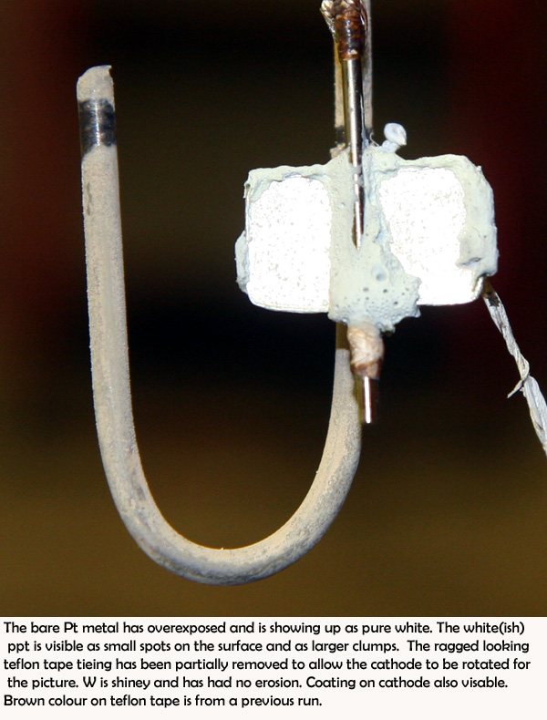
The saved contents of the cell that I had started with above, (with the thicker Tungsten current runners at 3 Ampers (Tungsten had corroded)), was placed in the cell for to
see of there was any W corrosion under a different pH. The pH of the cell contents last time (when W corroded) had been running at around 7.0 . Four cc's of perchloric acid (around 50%)
was
added to lower pH. A white ppt appeared. pH went to 4.0, 5cc more added (more white ppt) and pH went to 1.6, 10cc more took pH to 1.1 . The solution was now milkey white.
The white ppt may be some Tungsten compound as the cell contents must have some W dissolved (in some form or other) from its time in the first W cell above where corrosion of the
W welding electrodes took place. The new pure W (green tiped electrodes) current runners were use here BTW.
Cell contents was 25g/l chloride and 380g/l chlorate. The cell was stirred.
Quite a smell of Chlorine came from the cell, you could actually see the chlorine (I think) sitting on top of the liquid under the lid as you could actually see it blowing away
when the lid was lifted and you blew at it! Perhaps there was some ClO2 as well?
Current was 2.05A, Volts was 6.2, Temperature was 28C, cell volume around 790cc.
pH after about 2 hours was 0.6 . pH paper can be used to read pH (Watman Type CF) though I am using a pH meter.
The pH was kept low in a rather hap-hazzard way using 50% (approx.) perchloric acid.
The whole problem of trying to keep the pH low is made difficult by the fact
that the cell contains chloride. It is ALWAYS best to keep chloride out of perchlorate cells.
Thirty six cc of acid were used in lots of 4cc to 10cc to keep pH around 1.5 for the next 2 days. Sometimes pH managed to get up to 6.0 . There was quite a smell of chlorine after
acid was added. The white milkey ppt that was in the cell was inclined to deposit on the Platinum and was brushed off a few times. The black coating that was on the cathode
went away.
After two days chloride was at around 2g/l and chlorate was at 162g/l. No more acid additions were needed as the cell pH was around 1.3 after the last addition. It slowly rose up to
and was about 4.0 at the end of the cell run.
The CE over the next 24 hours was close to 100%.
Some chlorine would have been lost from the system, some added via the perchloric acid. The cell liquid was still not clear, some what milkey appearance.
Twenty four hours later the chlorate concentration was 0.4g/l with the liquor getting clearer. There was a white deposit coming onto the cathode. It's as if the ppt that the perchloric
acid additions caused had migrated from the solution to the cathode. The anode was clear at this time.
Twenty four hours later the cell was shut down. There was no visible erosion to the W electrodes or that could be detected using a micrometer. The rods are very shiney as if the W oxide coating is transparent. A white deposit appeared on the anode during the last 24 hours, perhaps a W compound from the last run? The Platinum was cleaned and weighed at 0.91g (no loss).
Be aware of starting material purity. It was surprising all the colours, ppt's and anode/cathode deposits that occcured when running the cells.
Avoid using nickle cathodes.
Regarding platinum recovery from cells. It's a not starter IMO. You will not have a hope of obtaining the few milli grams of platinum disperced over litre's of solution or/and
solid product and then turning this few milli grams of metal into something usable or valuable.
Nickle containing cathodes seem to give black corrosion products above and sometimes below the water line. Better to use stainless steel or Titanium.
| | |
| MW Sodium Chloride | 58.4 |
| MW Sodium Chlorate | 106.44 |
| MW Sodium Perchlorate | 122.44 |
| MW Potassium Chloride | 74.55 |
| MW Potassium Chlorate | 122.55 |
| MW Potassium Perchlorate | 138.55 |
| MW Barium Carbonate | 197.34 |
| MW Barium Chloride | 208.23 |
| MW Barium Chlorate | 304.23 |
| MW Barium Perchlorate | 336.23 |
| MW Lithium Carbonate | 73.89 |
| MW Lithium Chloride | 42.39 |
| MW Lithium Chlorate | 90.39 |
| MW Lithium Perchlorate | 106.39 |
| MW Strontium Carbonate | 147.63 |
| MW Strontium Chloride | 158.53 |
| MW Strontium Chlorate | 254.514 |
| MW Strontium Perchlorate | 286.514 |
| Amp-hours per mole of electrons | 26.802 |
HIT THE BACK BUTTON ON YOUR BROWSER